The cutting instructions pane, on the left of the studio, lists every facet tier in your design in the order you'd cut it. This page covers reading that list, finding a tier's facets on the stone (and a facet's tier back in the list), and editing a tier's angle, depth and indexes in edit mode.
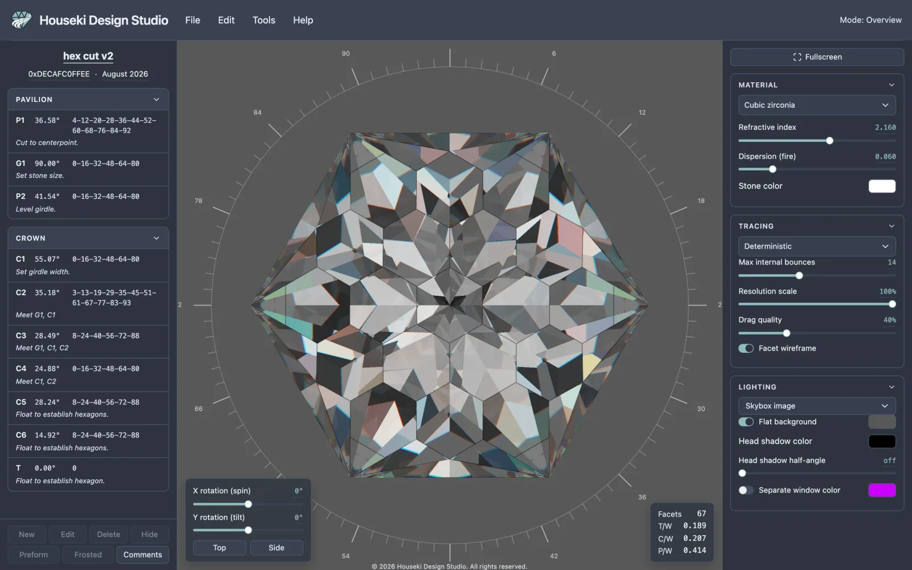
The pane has two sections, Pavilion then Crown — in that order because that's the order a stone is actually cut. Click either section's header to fold or unfold it.
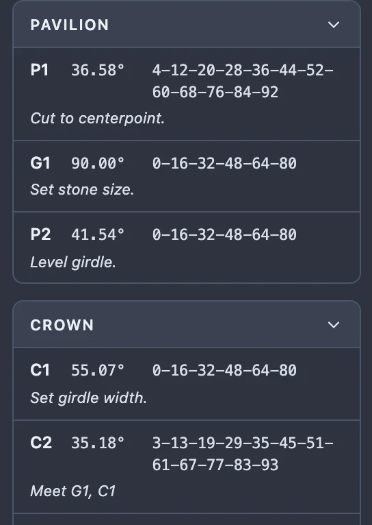
Each row shows:
| Column | Shows |
|---|---|
| Id | A letter and a number, in cutting order: P1, P2… for an ordinary pavilion tier, C1, C2… for an ordinary crown tier, G (numbered if there's more than one) for a girdle facet, and T for the table. These ids describe the cutting sequence, not the file that was opened — they're worked out fresh every time. |
| Angle | The facet's mast angle, always shown as a positive number (the girdle is 90°, a flat culet is 0°) whichever side of the stone it's actually cut on. |
| Index teeth | Every index-gear tooth this tier cuts a facet at, separated by
dashes, e.g. 4-12-20. A preform tier's teeth are wrapped in curly
braces, {4-12-20} — it's still cut normally, but the braces mark it as one
kept for its meetpoints rather than the finished cut. See the toolbar's Preform button below. |
| Notes | The tier's own cutting instruction, in italics, when it has one. Select the row (a single click) and click its notes to edit them; press Enter or click away to keep the change, Escape to cancel it. |
A hidden tier's whole row is greyed out but stays in the list, numbered and selectable. A frosted tier's angle and teeth sit on a darker background. Both are set from the toolbar — see the tier toolbar below.
Click a tier's row and every one of its facets lights up on the stone. Click one of those facets directly on the stone and the same thing happens the other way: the facet's tier is selected, its row gets an accent border and tint, and the pane scrolls it into view if it isn't already visible. Clicking empty space, off the stone, clears the highlight.
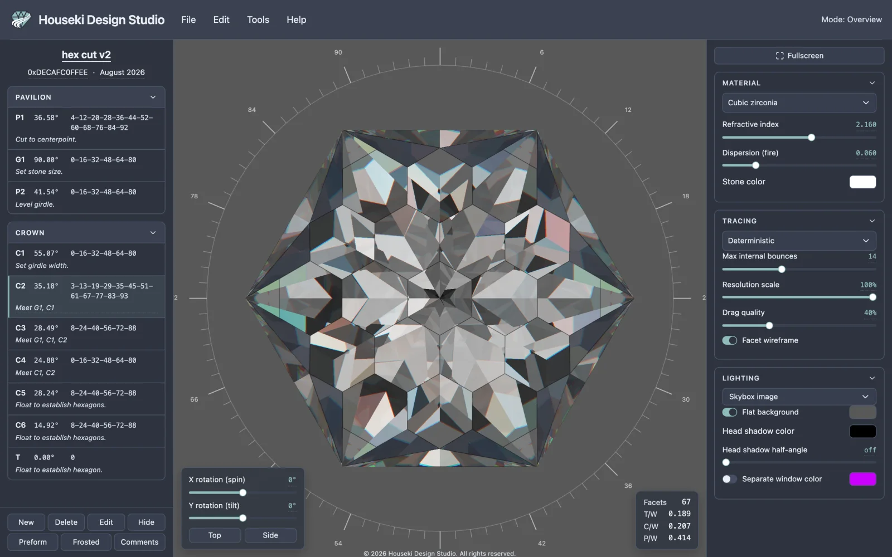
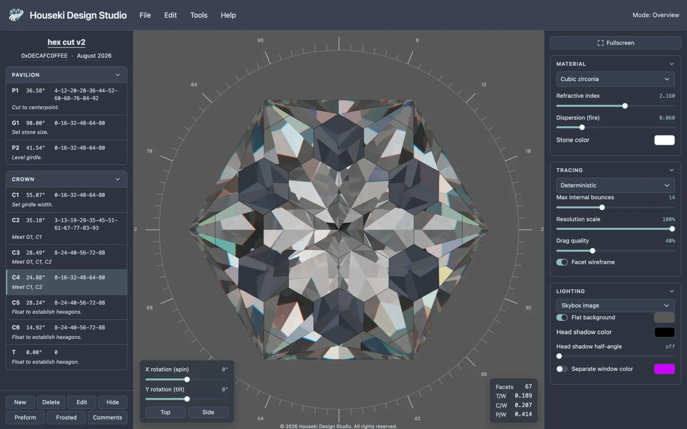
A single click never turns the stone. On a loaded design, a double click on a tier's row or on one of its facets opens edit mode instead (below) — the stone is left exactly as it was, not turned to face the facet.
Edit mode holds one tier at a time and lets you change its angle, its depth and its index teeth, watching the stone update as you go. There are four ways in, and all four do nothing while another tier is already being edited (their tooltips say to finish that one first):
Once you're in, the top bar's mode readout, at the right, reads Mode: Editing <id> — a reminder from anywhere on the page that you're editing rather than looking at the finished design. The render settings are replaced by the edit panel, the sub bar becomes that tier's own index controls, and a cutting plane appears on the stone. The camera doesn't move.
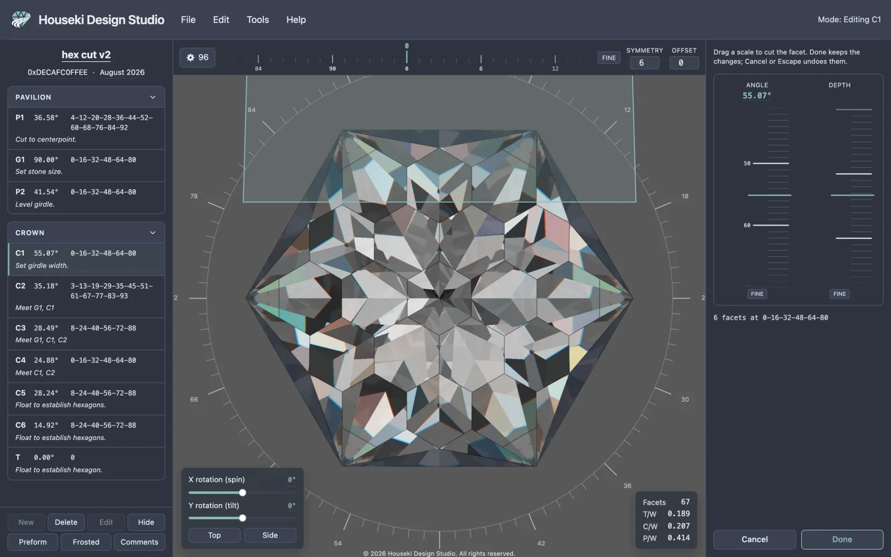
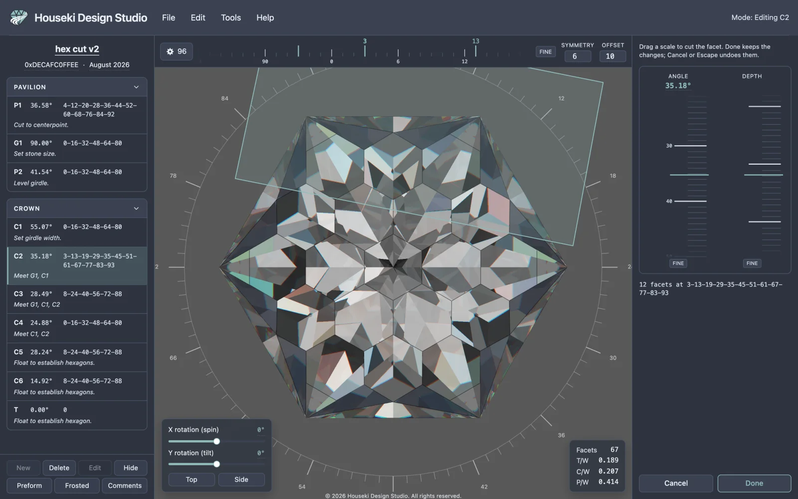
While you're editing a tier, a translucent quad is drawn through the stone in the facet's own plane — exactly where that cut lies, the width of the stone across it. It's drawn over the picture rather than being part of the render, so it costs nothing to draw and never slows the tracer down. It follows the stone as you orbit or zoom, and it stays on the facet you started editing on: changing the angle, the depth or the tier's teeth moves the plane with them, but nothing while you're in this session moves it to a different facet.
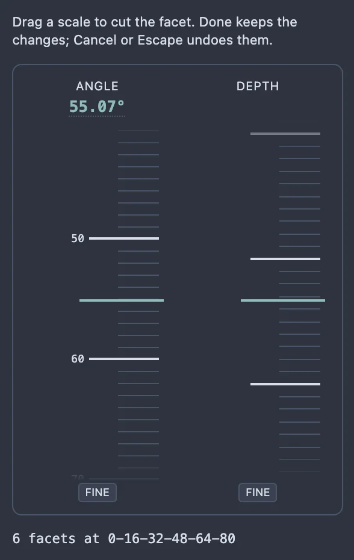
The edit panel holds two vertical tape rulers, Angle and Depth, each a strip you can drag like a tape measure. The Angle scale runs 0° to 90°, with 0 at the top for a crown tier and at the bottom for a pavilion tier, so the number always increases the same way the cutting instructions read it. The Depth scale has no numbers at all — it's an internal unit, not one a cutter reads off directly — but it still shows ticks, and a smaller value on it cuts a deeper facet.
| Gesture | Does |
|---|---|
| Drag the tape | Cuts the facet live as you move the pointer; the stone, the cutting instructions and the plane all follow. Releasing the pointer is what gets recorded as one step you can undo — the whole drag counts as a single edit. |
| Scroll the wheel over a scale | Nudges it one step at a time. Unlike a drag, each wheel notch is applied and recorded immediately, so scrolling several notches makes that many separate undo steps. |
| ↑ / ↓ (scale focused) | Moves by one step, in whichever direction is "up" the scale. Also applied and recorded immediately, like the wheel. |
| Page Up / Page Down | Moves by one major tick. |
| Home / End | Jumps to the two ends of the scale. |
| Click the Angle reading | Opens a text box to type an exact value. Enter, or clicking away, applies it; Escape cancels just the typing. (The Depth scale has no reading to click — typing a depth isn't offered, since the number means nothing outside the tape itself.) |
| Hold Shift while dragging, or click a scale's own Fine button first | Moves the tape a fifth as far as the pointer, for finer placing. The Fine button stays on until you click it again; Shift only applies while it's held. |
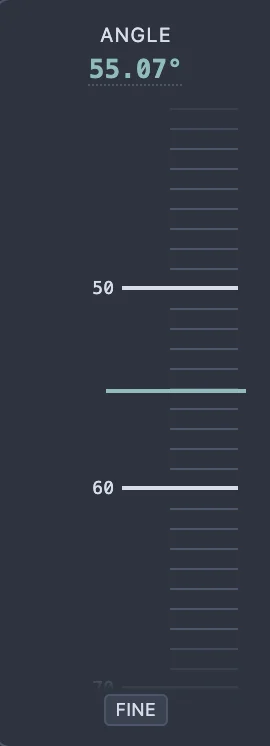
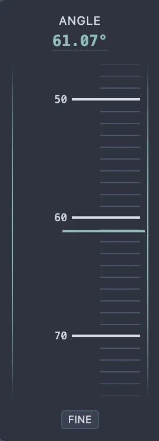
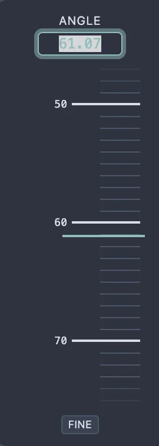
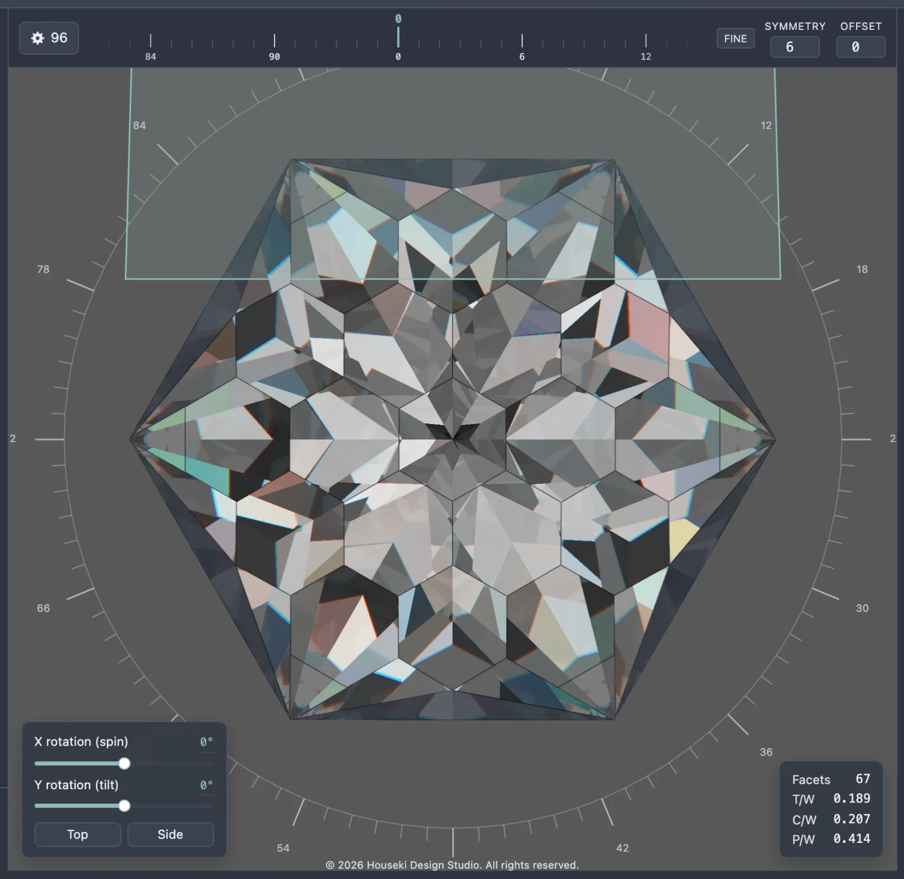
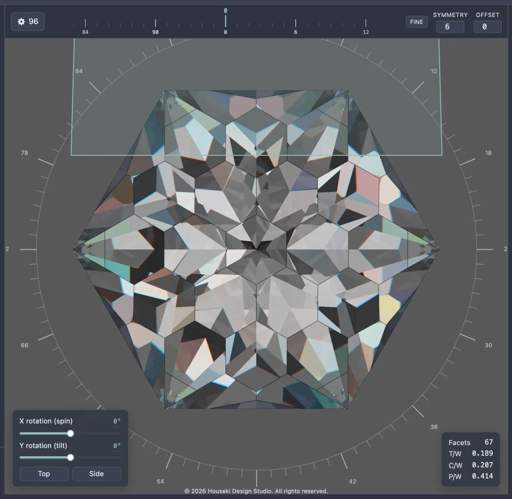
Whatever the sub bar describes while you're in edit mode is that tier's list of index teeth. It's the same index controls the sub bar always shows, but while a tier is open they cut that tier live instead of doing nothing.
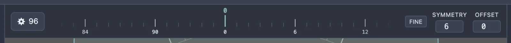
Arbitrary mode (ticked in the gear dialog) replaces the tooth tape and the Symmetry/Offset fields with a single Indexes text box, where you type the tier's teeth by hand — separated by dashes, commas or spaces. Turning it on carries the tape's current teeth into the box; turning it back off needs an evenly spaced list, or it's refused with a tooltip explaining why.
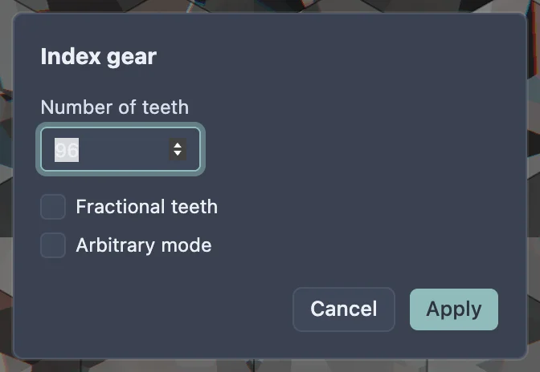
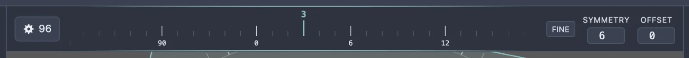
Every number on this page that can be typed follows the same rule: click it (or, for a scale, click its reading) to open a text box, and Enter or clicking away applies the value. This covers the Angle reading, the sub bar's Symmetry and Offset fields, the Indexes box in arbitrary mode, and the gear dialog's Number of teeth. Whatever Escape does in any of these fields, it never leaves edit mode while you're typing — on the Angle reading it cancels the typing outright; in the gear dialog it closes the whole dialog without applying.
Seven buttons sit at the bottom of the cutting instructions pane, in this order: New, Delete, Edit, Hide, Preform, Frosted, Comments. All but Comments act on the selected tier; a button that can't be used right now is greyed out, with a tooltip explaining why (hover it to see).
Below about 540px the pane shows two rows — New/Delete/Edit/Hide above Preform/Frosted/Comments, always that same split — and one row of all seven once the pane is wider than that (drag the handle between the pane and the render to widen it, up to 560px).
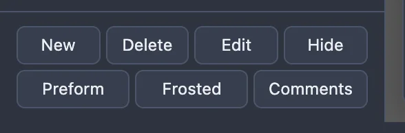
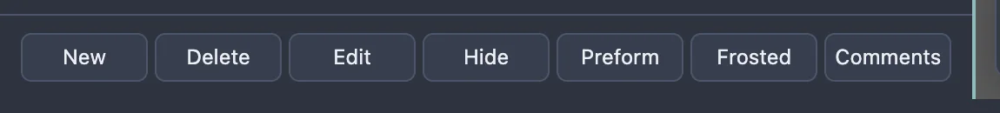
| Button | Does |
|---|---|
| New | Copies the selected tier, inserts the copy right after it, and opens the copy in edit mode. |
| Delete | Removes the selected tier and rebuilds the stone. Greyed out on a section's last remaining tier — the pavilion and the crown must each keep at least one. Backspace or Delete does the same, anywhere on the page a text field isn't focused. |
| Edit | Opens the selected tier in edit mode, the same as double-clicking its row or pressing Enter with a tier selected. |
| Hide / Show | Toggles whether the tier is cut into the stone at all. A hidden tier's row greys out entirely but stays in the list, numbered and selectable; the label reads Show once it's hidden. |
| Preform | Marks the tier as a preform step: its teeth show wrapped in curly braces on the row. It's still cut normally — the braces are a note that this tier is kept for its meetpoints, not that it's skipped. |
| Frosted | Marks the tier's facets as rough (frosted) glass; its angle and teeth get a darker background on the row. Only the Monte Carlo renderer actually draws a frosted facet as rough; the deterministic renderer shows it as an ordinary polished facet. |
| Comments | Opens a dialog for the whole design's own header and footer comments — not the selected tier's notes, which are edited in the pane itself (see above). It's active whenever a design is loaded, with no tier selected. |
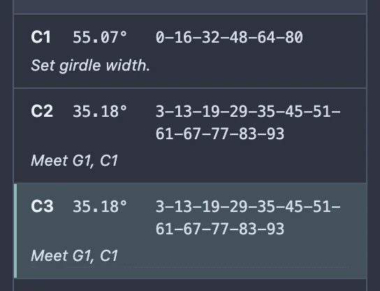
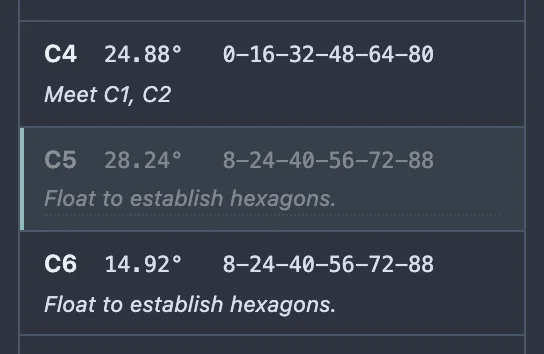
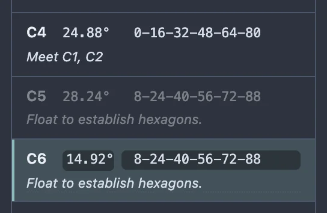
With the pointer anywhere except a text field, a dialog or a dropdown:
| Key | Does |
|---|---|
| ↑ / ↓ | Moves the selection up or down through the pane's own order (Pavilion, then Crown, top to bottom). With nothing selected, ↓ picks the first tier and ↑ the last; at either end of the list the selection stays put rather than wrapping round. |
| Enter | Opens the selected tier in edit mode — the same as clicking Edit. If the pointer's focus is on a button, link or menu item instead, Enter activates that as usual and does not edit anything. |
| Backspace / Delete | Deletes the selected tier — the same as clicking Delete, including its refusal on a section's last tier. |
None of these three fire while typing into a field (the cut name, a tier's notes, a slider readout…), with a <select> focused, or while a dialog or menu is open. ↑/↓ also do nothing while a whole-design mode — scale height, resize girdle or the cutting assistant — holds the design, since those modes' own toolbar is entirely inactive too. They do nothing harmful in edit mode either: the selection cannot leave the tier being edited, so pressing them just leaves it where it is.
Don't confuse these with Alt+↑/Alt+ ↓, which move a row within the cutting sequence (see Reordering tiers below) rather than change which tier is selected.
Drag a row up or down to change where it's cut — within its own section only; a pavilion row can never be dropped into the crown table or the other way round. The keyboard equivalent, with a row focused, is Alt+↑ / Alt+↓, which moves it one place at a time. Every other row's id renumbers immediately to match the new cutting order.
Two buttons at the bottom of the edit panel, and a key, all get you out:
Edit mode also ends on its own if the tier being edited stops existing — a Delete, an undo of a New, or opening a different design.
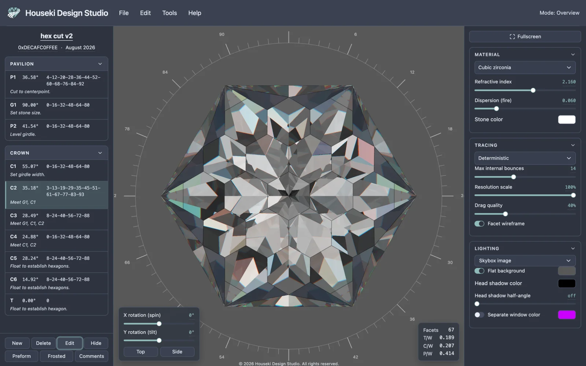
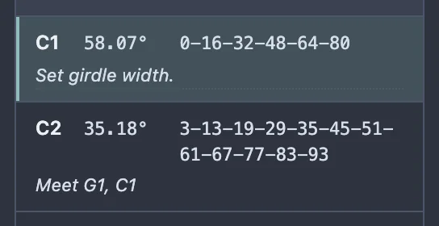
Every change on this page — reordering tiers, editing a tier's angle, depth or teeth, New, Delete, Hide/Show, Preform, Frosted, and the design's comments — goes on one edit history you can step through:
| Key | Does |
|---|---|
| Cmd+Z / Ctrl+Z | Undo |
| Shift+Cmd+Z / Ctrl+Shift+Z | Redo |
| Ctrl+Y (not on a Mac) | Redo |
These shortcuts, and the Edit menu's Undo and Redo items, act on the page's history — not on a text box. If the pointer is inside a field you're typing into, the same keys undo your typing there instead, the ordinary way a text box works.
A whole edit-mode session — from opening it to Done — settles into edits the same way described above: dragging a scale is one undo per drag, but the wheel and the arrow keys on the Angle and Depth scales each apply and record immediately, so several wheel notches or key presses in a row make that many separate undo steps. The sub bar's tooth tape, by contrast, batches a whole drag, scroll or run of key presses into a single undo.
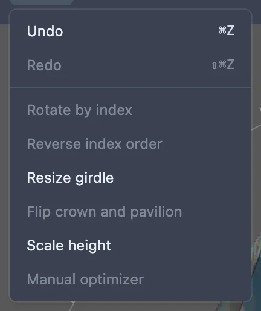
Undo and Redo are greyed out when there's nothing to step through. Below them are transforms that rewrite the whole design at once, rather than one tier — which is why they live in a menu instead of the tier toolbar:
To follow a whole design tier by tier at the machine, rather than edit it, see Cutting assistant.
The render's bottom-right corner shows the stone's facet count and three proportions, worked out from the stone as it stands right now — they update as you edit.
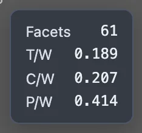
| Stat | What it means to a cutter |
|---|---|
| Facets | How many facets the stone has, girdle facets included. |
| T/W | The table's width along the stone's long axis, divided by the girdle's width across its short axis. |
| C/W | The crown's height, from the girdle to the table, divided by the girdle's width across its short axis. |
| P/W | The pavilion's height, from the culet to the girdle, divided by the girdle's width across its short axis. |
| Gesture / key | Where | Does |
|---|---|---|
| Click | A tier's row, or one of its facets on the stone | Selects that tier |
| Double-click | A tier's row, or one of its facets on the stone | Enters edit mode on that tier |
| Drag | The Angle or Depth scale, or the sub bar's tooth tape | Cuts the facet live; releasing (or the tape snapping) records the edit |
| Drag | A tier's row | Reorders it within its own section |
| Scroll wheel | The Angle or Depth scale | Nudges the value one step, recorded immediately |
| Scroll wheel | The sub bar's tooth tape | Moves it a tooth at a time, batched into one undo |
| ↑ ↓ | The Angle or Depth scale, focused | One step, recorded immediately |
| Page Up Page Down | The Angle or Depth scale, or the tooth tape, focused | One major tick, or one big tooth step |
| Home End | The Angle or Depth scale, focused | Jumps to the ends of the scale |
| Home | The tooth tape, focused | Jumps to tooth 0 |
| ← → ↑ ↓ | The tooth tape, focused | Steps one tooth |
| Shift held while dragging | Any scale or the tooth tape | Fine adjustment: a fifth as far as the pointer |
| Alt+↑ / Alt+↓ | A tier's row, focused | Reorders it one place within its section |
| ↑ / ↓ | Anywhere outside a text field, dialog or dropdown | Moves the tier selection up or down the pane's own order; nothing selected → ↓ picks the first tier, ↑ the last; clamped at both ends |
| Enter | A row, not yet selected, focused | Selects it, same as a click |
| Enter | A tier already selected, anywhere outside a text field or a focused button/link/menu item | Opens it in edit mode, same as Edit |
| Backspace / Delete | Anywhere outside a text field, with a tier selected | Deletes the selected tier, same as Delete |
| Escape | Anywhere in edit mode, outside a text box or dialog | Leaves edit mode and undoes the session, same as Cancel |
| Escape | Typing the Angle reading | Cancels the typing; edit mode stays open |
| Escape | A text box focused (Symmetry, Offset, Indexes…) | Never leaves edit mode, even though it doesn't cancel anything in these fields either |
| Enter | While typing a value | Applies it |
| Cmd/Ctrl+Z | Anywhere outside a text box | Undo |
| Shift+Cmd/Ctrl+Z, or Ctrl+Y | Anywhere outside a text box | Redo |